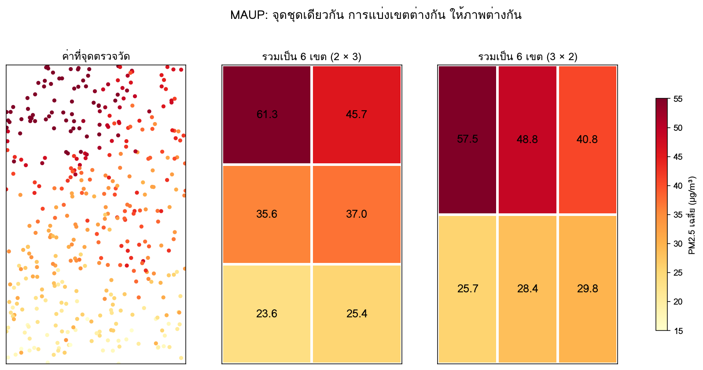

17 ข้อมูลเชิงพื้นที่
ทุกสถานีในตาราง stations มีพิกัดละติจูดและลองจิจูด แต่บทก่อนหน้าใช้พิกัดเพียงเพื่อติดป้ายภาคหรือจังหวัด บทนี้ใช้ตำแหน่งเป็นข้อมูลโดยตรง สถานีใดอยู่ใกล้กัน สถานีใดอยู่ในจังหวัดใด จังหวัดใดไม่มีสถานีเลย และค่าฝุ่นในพื้นที่ที่ไม่มีสถานีน่าจะเป็นเท่าใด คำถามเหล่านี้ต้องใช้เครื่องมือเฉพาะของข้อมูลเชิงพื้นที่ และมีกับดักที่ไม่มีในข้อมูลตารางทั่วไป ที่สำคัญที่สุดคือระบบพิกัด ซึ่งถ้าเลือกผิด ระยะทางและพื้นที่ที่คำนวณได้จะผิดทั้งหมดโดยไม่มีข้อความเตือน
บทนี้เริ่มจากพื้นฐานทางภูมิมาตรศาสตร์ที่จำเป็นต่อการเข้าใจระบบพิกัด ต่อด้วยระบบพิกัดที่เหมาะกับประเทศไทย แบบจำลองข้อมูลเวกเตอร์และการดำเนินการเชิงพื้นที่ด้วย GeoPandas แผนที่ choropleth และปัญหา MAUP จากนั้นเป็นหัวข้อเชิงลึกเรื่อง spatial autocorrelation และการประมาณค่าเชิงพื้นที่ และจบด้วยแผนที่บนเว็บด้วย Folium ตัวอย่างในบทนี้ทดสอบกับฐานข้อมูลสังเคราะห์ 50 สถานีและขอบเขตจังหวัดสังเคราะห์ ซึ่งไม่ใช่ขอบเขตจริง
วัตถุประสงค์การเรียนรู้
เมื่อจบบทนี้ ผู้อ่านสามารถ
- อธิบายความสัมพันธ์ระหว่าง ellipsoid, datum, พิกัดภูมิศาสตร์ และเส้นโครงแผนที่
- เลือกระบบพิกัดที่เหมาะกับงานในประเทศไทย และแปลงระบบพิกัดด้วย GeoPandas
- สร้างและดำเนินการกับข้อมูลเวกเตอร์ ได้แก่ spatial join, ระยะทาง และ buffer
- สร้างแผนที่ choropleth ที่ซื่อตรง และอธิบายผลของ MAUP ต่อการตีความ
- ประเมินข้อจำกัดของการอนุมานค่าในพื้นที่ที่ไม่มีสถานีตรวจวัด
- สร้างแผนที่บนเว็บด้วย Folium สำหรับการสำรวจและการสื่อสาร
17.1 ภูมิมาตรศาสตร์เบื้องต้น: ellipsoid, datum, พิกัดภูมิศาสตร์
โลกไม่ใช่ทรงกลม
การระบุตำแหน่งบนโลกต้องมีแบบจำลองรูปร่างของโลก โลกไม่ได้เป็นทรงกลมสมบูรณ์ แต่ป่องที่เส้นศูนย์สูตรและแบนที่ขั้วโลก แบบจำลองทางคณิตศาสตร์ที่ใช้คือ ellipsoid (ทรงรีที่ได้จากการหมุนวงรีรอบแกนสั้น) ซึ่งกำหนดด้วยรัศมีที่เส้นศูนย์สูตร \(a\) และความแบน \(f\) ellipsoid ที่ใช้มากที่สุดในปัจจุบันคือ WGS 84 ซึ่งมี \(a = 6{,}378{,}137\) เมตร และ \(f = 1/298.257223563\) (National Geospatial-Intelligence Agency 2014) รัศมีที่ขั้วจึงสั้นกว่าที่เส้นศูนย์สูตรประมาณ 21 กิโลเมตร
datum
datum คือการผูก ellipsoid เข้ากับโลกจริง กำหนดว่าจุดศูนย์กลางและการวางแนวของ ellipsoid อยู่ที่ใด datum ที่ต่างกันทำให้จุดเดียวกันบนพื้นดินมีพิกัดต่างกัน ประเทศไทยเคยใช้ datum Indian 1975 ในแผนที่ยุคก่อน ซึ่งใช้ ellipsoid Everest ที่ fit กับพื้นที่เอเชียใต้ ส่วนแผนที่และ GPS ในปัจจุบันใช้ WGS 84 พิกัดของจุดเดียวกันใน datum ทั้งสองอาจต่างกันหลายร้อยเมตร ซึ่งมากพอที่จะทำให้สถานีตรวจวัดดูเหมือนอยู่ผิดฝั่งถนนหรือผิดอำเภอ ถ้านำข้อมูลจากสอง datum มารวมกันโดยไม่แปลง
พิกัดภูมิศาสตร์
พิกัดภูมิศาสตร์ (geographic coordinates) ระบุตำแหน่งด้วยมุมสองค่าบน ellipsoid คือ ละติจูด (latitude) มุมเหนือหรือใต้ของเส้นศูนย์สูตร ตั้งแต่ −90° ถึง 90° และ ลองจิจูด (longitude) มุมตะวันออกหรือตะวันตกของเส้นเมริเดียนแรก ตั้งแต่ −180° ถึง 180° ประเทศไทยอยู่ที่ละติจูดประมาณ 5.6° ถึง 20.5° เหนือ และลองจิจูดประมาณ 97.3° ถึง 105.6° ตะวันออก
ข้อควรระวังที่สำคัญที่สุดของพิกัดภูมิศาสตร์คือ องศาไม่ใช่หน่วยระยะทาง ระยะของหนึ่งองศาละติจูดประมาณ 111 กิโลเมตรเสมอ แต่ระยะของหนึ่งองศาลองจิจูดเท่ากับประมาณ \(111 \times \cos(\text{ละติจูด})\) กิโลเมตร ที่เชียงใหม่ (ประมาณ 18.8° เหนือ) หนึ่งองศาลองจิจูดยาวประมาณ 105 กิโลเมตร ส่วนที่นราธิวาส (ประมาณ 6.4° เหนือ) ยาวประมาณ 110 กิโลเมตร การคำนวณระยะทางด้วยสูตรยุคลิดบนพิกัดองศาโดยตรงจึงผิดทั้งหน่วยและสัดส่วน
ระยะทางบนผิวโลก
ระยะทางที่ถูกต้องระหว่างสองจุดบน ellipsoid เรียกว่า ระยะทาง geodesic คำนวณได้ด้วยไลบรารี pyproj ซึ่งใช้อัลกอริทึมของ Karney (Karney 2013)
from pyproj import Geod
geod = Geod(ellps="WGS84")
_, _, dist_m = geod.inv(98.98, 18.79, 100.50, 13.75) # (lon1, lat1, lon2, lat2)
print(round(dist_m / 1000, 1))# ผลลัพธ์
580.9ระยะทางตรงจากใจกลางเชียงใหม่ถึงใจกลางกรุงเทพมหานครประมาณ 581 กิโลเมตร ข้อสังเกตเรื่องลำดับของพิกัด ไลบรารีเชิงพื้นที่ส่วนใหญ่ใน Python รวมถึง Shapely, GeoPandas และ GeoJSON ใช้ลำดับ (ลองจิจูด, ละติจูด) ซึ่งตรงกับ (x, y) แต่ภาษาพูดและแผนที่บนเว็บหลายตัว เช่น Folium ใช้ (ละติจูด, ลองจิจูด) การสลับลำดับเป็นข้อผิดพลาดที่พบบ่อยที่สุดของข้อมูลเชิงพื้นที่ และทำให้สถานีในประเทศไทยไปอยู่กลางมหาสมุทรอินเดีย
17.2 ระบบพิกัดและเส้นโครงแผนที่สำหรับประเทศไทย (WGS 84, UTM 47N/48N)
CRS และรหัส EPSG
ระบบพิกัดอ้างอิง (coordinate reference system, CRS) คือข้อกำหนดครบชุดที่บอกว่าตัวเลขพิกัดหมายถึงตำแหน่งใด ประกอบด้วย datum ชนิดของพิกัด (ภูมิศาสตร์หรือฉาก) และหน่วย ในทางปฏิบัติ CRS ระบุด้วย รหัส EPSG ซึ่งเป็นทะเบียนมาตรฐานที่ดูแลโดย IOGP (International Association of Oil & Gas Producers 2026)
| รหัส EPSG | ชื่อ | ชนิด | หน่วย | ใช้เมื่อ |
|---|---|---|---|---|
| 4326 | WGS 84 | ภูมิศาสตร์ | องศา | เก็บและแลกเปลี่ยนข้อมูล GPS, GeoJSON |
| 32647 | WGS 84 / UTM zone 47N | ฉาก (projected) | เมตร | คำนวณระยะทางและพื้นที่ ทางตะวันตกของ 102° ตะวันออก |
| 32648 | WGS 84 / UTM zone 48N | ฉาก | เมตร | คำนวณระยะทางและพื้นที่ ทางตะวันออกของ 102° ตะวันออก |
| 3857 | WGS 84 / Pseudo-Mercator | ฉาก | เมตร (บิดเบือน) | แสดงผลบนแผนที่เว็บเท่านั้น |
| 24047 | Indian 1975 / UTM zone 47N | ฉาก | เมตร | อ่านแผนที่และข้อมูลยุคเก่าของไทย |
เส้นโครงแผนที่
เส้นโครงแผนที่ (map projection) แปลงพิกัดบนผิวโค้งของ ellipsoid เป็นพิกัดบนระนาบ การแปลงนี้ต้องบิดเบือนบางอย่างเสมอ เพราะผิวโค้งแผ่เป็นระนาบโดยไม่ยืดหรือฉีกไม่ได้ เส้นโครงแต่ละแบบเลือกรักษาคุณสมบัติต่างกัน เช่น รักษามุม (conformal) รักษาพื้นที่ (equal-area) หรือรักษาระยะทางจากจุดหนึ่ง (equidistant) (Snyder 1987)
UTM (Universal Transverse Mercator) แบ่งโลกเป็น 60 โซน โซนละ 6° ลองจิจูด แต่ละโซนใช้เส้นโครง transverse Mercator ที่มีเส้นเมริเดียนกลางของตนเอง ภายในโซน ความบิดเบือนของระยะทางไม่เกินประมาณ 0.1% ประเทศไทยคร่อมสองโซน โซน 47N ครอบคลุมลองจิจูด 96° ถึง 102° ตะวันออก (ภาคเหนือ ภาคกลาง และภาคใต้ส่วนใหญ่) ส่วนโซน 48N ครอบคลุม 102° ถึง 108° ตะวันออก (ภาคตะวันออกเฉียงเหนือส่วนใหญ่และภาคตะวันออกบางส่วน)
แปลง CRS ด้วย GeoPandas
import duckdb
import geopandas as gpd
con = duckdb.connect("data/pm25.duckdb", read_only=True)
st = con.execute("SELECT * FROM stations").df()
stations = gpd.GeoDataFrame(st, geometry=gpd.points_from_xy(st["lon"], st["lat"]), crs="EPSG:4326")
print(stations.crs.to_string(), stations.total_bounds.round(2))
stations_m = stations.to_crs(epsg=32647) # แปลงเป็น UTM 47N หน่วยเมตร# ผลลัพธ์ (ตัวอย่าง)
# ข้อมูลสังเคราะห์ 50 สถานี ไม่ใช่ข้อมูล Air4Thai จริง
EPSG:4326 [ 97.96 6.33 104.85 19.94]points_from_xy รับลองจิจูดก่อนละติจูด และ total_bounds คืนค่า [minx, miny, maxx, maxy] ซึ่งควรอยู่ในช่วงประมาณ [97, 5, 106, 21] สำหรับประเทศไทย ถ้าได้ค่าที่ต่างไปมาก ให้ตรวจว่าสลับลำดับหรือไม่ และแก้ที่ script นำเข้าข้อมูลใน src/ ไม่ใช่ใน notebook
ความต่างระหว่าง set_crs กับ to_crs สำคัญมาก set_crs ประกาศ ว่าตัวเลขพิกัดที่มีอยู่อยู่ในระบบใด โดยไม่เปลี่ยนตัวเลข ส่วน to_crs แปลง ตัวเลขเป็นระบบใหม่ การใช้ set_crs เพื่อ “เปลี่ยน” ระบบพิกัดเป็นข้อผิดพลาดที่ทำให้ข้อมูลกระโดดไปอยู่ผิดที่โดยไม่มีข้อความเตือน
เลือกระบบพิกัดสำหรับงานระดับประเทศ
ข้อมูลที่ครอบคลุมทั้งประเทศคร่อมสองโซน UTM การใช้โซน 47N กับจุดในภาคตะวันออกเฉียงเหนือยังคำนวณได้ แต่ความบิดเบือนเพิ่มขึ้นตามระยะห่างจากเส้นเมริเดียนกลาง ตัวอย่างเช่น อุบลราชธานี (ประมาณ 104.85° ตะวันออก) มีพิกัด x ในโซน 47N ประมาณ 1,129,000 เมตร ซึ่งเกินช่วงปกติของโซน (ประมาณ 166,000 ถึง 834,000 เมตร) แนวทางปฏิบัติมีดังนี้
| งาน | ระบบพิกัดที่แนะนำ |
|---|---|
| ระยะทางระหว่างสถานีทั่วประเทศ | ระยะทาง geodesic (pyproj.Geod) หรือ UTM 47N ถ้ายอมรับความคลาดเคลื่อนเล็กน้อย |
| buffer และระยะทางในพื้นที่จำกัด | โซน UTM ของพื้นที่นั้น |
| พื้นที่ของจังหวัดทั่วประเทศ | เส้นโครงแบบรักษาพื้นที่ เช่น Albers equal-area ที่ตั้งค่าสำหรับประเทศไทย หรือคำนวณแยกตามโซน |
| แสดงผลบนแผนที่เว็บ | ให้ไลบรารีแปลงเป็น 3857 เอง เก็บข้อมูลเป็น 4326 |
สำหรับระยะทางระหว่างเชียงใหม่กับกรุงเทพมหานคร UTM 47N ให้ 580.7 กิโลเมตร เทียบกับระยะทาง geodesic 580.9 กิโลเมตร คลาดเพียงประมาณ 0.03% ซึ่งยอมรับได้สำหรับงานส่วนใหญ่ ส่วนการคำนวณ “ระยะทาง” ด้วยพิกัดองศาโดยตรงให้ 5.26 ซึ่งไม่มีหน่วยที่มีความหมาย GeoPandas จะเตือนเมื่อเรียก distance หรือ buffer กับข้อมูลที่ใช้ระบบพิกัดภูมิศาสตร์ คำเตือนนี้ต้องไม่ถูกเพิกเฉย
17.3 vector data model: point, line, polygon
สองแบบจำลองของข้อมูลเชิงพื้นที่
ข้อมูลเชิงพื้นที่แบ่งเป็นสองแบบจำลองหลัก raster แบ่งพื้นที่เป็นตารางช่อง (pixel) แต่ละช่องมีค่า เช่น ภาพถ่ายดาวเทียม ค่าความลึกของละอองลอย (aerosol optical depth) จากดาวเทียม หรือผลการประมาณค่าเชิงพื้นที่ในหัวข้อ 17.7 ส่วน vector แทนวัตถุด้วยรูปทรงเรขาคณิต ซึ่งเป็นแบบจำลองที่ใช้กับข้อมูลสถานีและขอบเขตการปกครอง บทนี้เน้นแบบ vector
รูปทรงพื้นฐาน
มาตรฐาน Simple Features ของ OGC กำหนดรูปทรงพื้นฐานที่ไลบรารีส่วนใหญ่ใช้ร่วมกัน (Open Geospatial Consortium 2011)
| รูปทรง | ใช้แทน | ตัวอย่างในโครงการ |
|---|---|---|
| Point | ตำแหน่งเดียว | สถานีตรวจวัด จุดความร้อนจากดาวเทียม |
| LineString | เส้นทาง | ถนน แม่น้ำ เส้นทางเดินของเซนเซอร์เคลื่อนที่ |
| Polygon | พื้นที่ปิด | ขอบเขตจังหวัด เขตอุทยาน |
| Multi* | หลายชิ้นเป็นวัตถุเดียว | จังหวัดที่มีเกาะ เช่น ภูเก็ต (MultiPolygon) |
GeoDataFrame
GeoPandas ขยาย pandas ด้วย GeoDataFrame ซึ่งเป็น DataFrame ที่มีคอลัมน์ geometry พิเศษหนึ่งคอลัมน์ พร้อม CRS กำกับ การดำเนินการเชิงพื้นที่ทำผ่าน Shapely ซึ่งเป็นไลบรารีเรขาคณิตภายใต้ (Jordahl และคณะ 2020)
prov = gpd.read_file("data/geo/thailand_provinces.geojson")
print(prov.crs, len(prov), list(prov.columns))# ผลลัพธ์ (ตัวอย่าง)
# ขอบเขตจังหวัดสังเคราะห์ 37 จังหวัด ไม่ใช่ขอบเขตจริง
EPSG:4326 37 ['ADM1_TH', 'geometry']ไฟล์ขอบเขตจังหวัดจริงหาได้จากแหล่งเปิด เช่น geoBoundaries, Humanitarian Data Exchange (HDX) หรือ GADM แต่ละแหล่งมีสัญญาอนุญาตต่างกัน บางแหล่งห้ามใช้เชิงพาณิชย์หรือกำหนดให้ระบุที่มา จึงต้องอ่านและบันทึกสัญญาอนุญาตไว้ใน README ทุกครั้ง (บทที่ 22) ชื่อคอลัมน์และการสะกดชื่อจังหวัดก็ต่างกันตามแหล่ง ควรเปลี่ยนชื่อให้เป็นมาตรฐานของโครงการในฟังก์ชันเดียว
"""src/geo_utils.py: ฟังก์ชันช่วยงานเชิงพื้นที่ ใช้ร่วมกันใน notebook, report และ app"""
from pathlib import Path
import geopandas as gpd
ROOT = Path(__file__).resolve().parents[1]
PROV_FILE = ROOT / "data" / "geo" / "thailand_provinces.geojson"
NAME_FIX = {"กรุงเทพฯ": "กรุงเทพมหานคร"} # เติมตามที่พบจริงในไฟล์ที่ใช้
def load_provinces(name_col: str) -> gpd.GeoDataFrame:
"""อ่านขอบเขตจังหวัด เปลี่ยนชื่อคอลัมน์เป็น prov_name และแก้การสะกดให้ตรงกับตาราง stations"""
prov = gpd.read_file(PROV_FILE).rename(columns={name_col: "prov_name"})
prov["prov_name"] = prov["prov_name"].replace(NAME_FIX)
return prov[["prov_name", "geometry"]].to_crs("EPSG:4326")ความถูกต้องของรูปทรง
ไฟล์ขอบเขตจากแหล่งต่าง ๆ อาจมีรูปทรงที่ไม่ถูกต้อง (invalid) เช่น polygon ที่ขอบตัดกันเอง ซึ่งทำให้การดำเนินการเชิงพื้นที่ล้มเหลวหรือให้ผลผิด ตรวจได้ด้วย prov.is_valid และซ่อมด้วย prov.make_valid() นอกจากนี้ ไฟล์ที่ทำให้ง่ายขึ้น (simplified) เพื่อลดขนาด จะมีขอบที่หยาบกว่าความจริง สถานีที่อยู่ใกล้รอยต่อระหว่างจังหวัดอาจตกไปอยู่ผิดจังหวัด ซึ่งหัวข้อถัดไปจะพบ
17.4 spatial operation และ spatial join
ความสัมพันธ์เชิงพื้นที่
การดำเนินการเชิงพื้นที่ที่ใช้บ่อยแบ่งเป็นสามกลุ่ม
| กลุ่ม | ตัวอย่าง | ใน GeoPandas |
|---|---|---|
| ความสัมพันธ์ (predicate) | จุดอยู่ในพื้นที่ พื้นที่สองพื้นที่ตัดกัน | within, contains, intersects, touches |
| การวัด | ระยะทาง พื้นที่ ความยาว | distance, area, length |
| การสร้างรูปทรงใหม่ | พื้นที่รอบจุด รวมพื้นที่ ส่วนที่ซ้อนกัน | buffer, dissolve, overlay, centroid |
spatial join
spatial join เชื่อมสองตารางด้วยความสัมพันธ์เชิงพื้นที่แทนคีย์ ตัวอย่างที่มีประโยชน์ที่สุดในโครงการคือ ตรวจว่าคอลัมน์ province ในตาราง stations ตรงกับจังหวัดที่พิกัดของสถานีตกอยู่จริงหรือไม่ ซึ่งเป็นการตรวจคุณภาพข้อมูล (บทที่ 9) ด้วยหลักฐานเชิงพื้นที่
prov = load_provinces("ADM1_TH")
joined = gpd.sjoin(stations, prov, how="left", predicate="within")
print("อยู่นอกทุกจังหวัด:", joined["prov_name"].isna().sum())
mismatch = joined[joined["province"] != joined["prov_name"]]
print(mismatch[["station_id", "province", "prov_name"]])# ผลลัพธ์ (ตัวอย่าง)
# ข้อมูลและขอบเขตสังเคราะห์
อยู่นอกทุกจังหวัด: 0
station_id province prov_name
22 s23 กรุงเทพมหานคร นนทบุรี
29 s30 กรุงเทพมหานคร นนทบุรีก่อนแก้การสะกดด้วย NAME_FIX มีแปดสถานีที่ไม่ตรงกัน ส่วนใหญ่เพราะไฟล์ขอบเขตสะกดว่า “กรุงเทพฯ” หลังแก้เหลือสองสถานีในกรุงเทพมหานครที่พิกัดตกอยู่ในนนทบุรี ซึ่งเป็นสถานีที่อยู่ใกล้รอยต่อระหว่างสองจังหวัด สาเหตุที่เป็นไปได้มีสามอย่าง ได้แก่ ขอบเขตในไฟล์หยาบเกินไป พิกัดของสถานีคลาดเคลื่อน หรือข้อมูลจังหวัดในตาราง stations ผิด การตัดสินต้องตรวจกับแหล่งข้อมูลต้นทาง เช่น เว็บไซต์ Air4Thai แล้วบันทึกผลไว้ ไม่ใช่แก้ให้ตรงโดยอัตโนมัติ (ในตัวอย่างนี้ สาเหตุคือขอบเขตสังเคราะห์ที่สร้างอย่างหยาบ)
ระยะทางและเพื่อนบ้านใกล้สุด
การหาสถานีที่ใกล้ที่สุดของแต่ละสถานีใช้ sjoin_nearest ในระบบพิกัดที่มีหน่วยเมตร ผลนี้ใช้ได้หลายอย่าง เช่น หาสถานีอ้างอิงสำหรับตรวจค่าผิดปกติตามบริบท (บทที่ 15) และระบุสถานีที่อยู่โดดเดี่ยว
s_m = stations.to_crs(epsg=32647)[["station_id", "geometry"]]
near = gpd.sjoin_nearest(s_m, s_m.rename(columns={"station_id": "nb_id"}),
distance_col="dist_m", exclusive=True) # exclusive: ไม่จับคู่กับตัวเอง
near["dist_km"] = (near["dist_m"] / 1000).round(1)
print(near.sort_values("dist_km", ascending=False).head(3)[["station_id", "nb_id", "dist_km"]])
print("มัธยฐาน", near["dist_km"].median(), "กม.")# ผลลัพธ์ (ตัวอย่าง)
# ข้อมูลสังเคราะห์ 50 สถานี
station_id nb_id dist_km
20 s21 s16 250.7
46 s47 s48 173.5
47 s48 s47 173.5
มัธยฐาน 8.0 กม.มัธยฐานของระยะถึงสถานีที่ใกล้ที่สุดเพียง 8 กิโลเมตร แต่บางสถานีห่างจากสถานีอื่นถึง 250 กิโลเมตร การกระจายตัวที่ไม่สม่ำเสมอนี้เป็นลักษณะของเครือข่ายตรวจวัดจริง สถานีกระจุกในเมืองใหญ่และเบาบางในชนบท สถานีที่อยู่โดดเดี่ยวคือสถานีที่ “เป็นตัวแทน” ของพื้นที่กว้าง ซึ่งต้องระวังเมื่อตีความแผนที่ในหัวข้อถัดไป
buffer และ dissolve
buffer สร้างพื้นที่รอบรูปทรงในระยะที่กำหนด เช่น พื้นที่ในรัศมี 50 กิโลเมตรรอบสถานี ใช้ตอบคำถามว่า “สถานีแต่ละแห่งมีสถานีอื่นในรัศมี 50 กิโลเมตรกี่แห่ง” หรือ “จุดความร้อนกี่จุดอยู่ในรัศมี 50 กิโลเมตรของสถานี” ส่วน dissolve รวมรูปทรงตามค่าของคอลัมน์ เช่น รวมจังหวัดเป็นภาค
buffers = s_m.assign(geometry=s_m.buffer(50_000)) # รัศมี 50 กม. ในหน่วยเมตร
n_within = gpd.sjoin(s_m, buffers, predicate="within").groupby("station_id_right").size() - 1
regions = prov.merge(st[["province", "region"]].drop_duplicates(), left_on="prov_name",
right_on="province").dissolve(by="region")17.5 แผนที่ choropleth และปัญหา MAUP
choropleth
แผนที่ choropleth ระบายสีแต่ละพื้นที่ตามค่าของตัวแปร เป็นแผนที่ที่คุ้นตาที่สุด แต่ก็ชวนให้เข้าใจผิดได้ง่ายที่สุดชนิดหนึ่ง การสร้าง choropleth ระดับจังหวัดจากข้อมูลสถานีต้องตัดสินใจเรื่องการรวมข้อมูลก่อน
agg = con.execute("""
WITH per_station AS (
SELECT station_id, AVG(pm25_mean) AS pm25, AVG((pm25_mean > 37.5)::INT) AS share_over
FROM daily_pm25_clean
WHERE is_complete AND date < DATE '2024-01-01'
GROUP BY station_id
)
SELECT s.province, COUNT(*) AS n_stations, AVG(p.pm25) AS pm25_mean, AVG(p.share_over) AS share_over
FROM per_station AS p JOIN stations AS s USING (station_id)
GROUP BY s.province
""").df()
m = prov.merge(agg, left_on="prov_name", right_on="province", how="left")
print("จังหวัดที่ไม่มีสถานี:", int(m["n_stations"].isna().sum()), "จาก", len(m))
m.plot(column="share_over", cmap="YlOrRd", legend=True, edgecolor="white",
missing_kwds={"color": "lightgrey", "hatch": "///", "label": "ไม่มีสถานี"})# ผลลัพธ์ (ตัวอย่าง)
# ข้อมูลและขอบเขตสังเคราะห์
จังหวัดที่ไม่มีสถานี: 10 จาก 37query นี้รวมข้อมูลสองขั้น ขั้นแรกคำนวณสัดส่วนวันเกินมาตรฐานของแต่ละสถานี ขั้นที่สองเฉลี่ยค่าของสถานีในจังหวัดเดียวกัน วิธีนี้ให้น้ำหนักแต่ละสถานีเท่ากัน ไม่ว่าจะมีข้อมูลกี่วัน ซึ่งต่างจากการคำนวณจากสถานี-วันทั้งหมดของจังหวัดโดยตรง บทที่ 18 อธิบายความต่างของการรวมสองแบบนี้
หลักการของ choropleth ที่ซื่อตรง
| หลักการ | เหตุผล |
|---|---|
| แสดงพื้นที่ที่ไม่มีข้อมูลด้วยสีหรือลวดลายที่แยกชัด | ถ้าใช้สีอ่อนที่สุดของชุดสี ผู้อ่านจะเข้าใจว่าค่าต่ำ |
| แสดงจำนวนสถานีต่อพื้นที่ | ค่าของจังหวัดที่มีสถานีเดียวไม่แน่นอนกว่าจังหวัดที่มีแปดสถานีมาก |
| ใช้ชุดสี sequential ที่ perceptually uniform | ตามหลักในบทที่ 11 |
| ใช้อัตราหรือค่าเฉลี่ย ไม่ใช่ผลรวม | ผลรวมขึ้นกับขนาดพื้นที่และจำนวนสถานี |
| ระวังพื้นที่ขนาดใหญ่ครอบงำสายตา | จังหวัดใหญ่ดูสำคัญกว่าจังหวัดเล็กที่มีประชากรมาก |
ข้อสุดท้ายเป็นปัญหาโดยธรรมชาติของ choropleth กรุงเทพมหานครมีพื้นที่ประมาณ 1,570 ตารางกิโลเมตร เล็กกว่าเชียงใหม่ประมาณ 13 เท่า แต่มีประชากรมากกว่าหลายเท่า ถ้าคำถามเกี่ยวกับการสัมผัสฝุ่นของประชากร แผนที่ choropleth จะให้น้ำหนักทางสายตาผิดทาง ทางเลือกได้แก่ แผนที่จุดที่ขนาดแปรตามประชากร หรือ cartogram ที่ปรับขนาดพื้นที่ตามประชากร
ในข้อมูลสังเคราะห์ของหนังสือ จังหวัดที่มีสัดส่วนวันเกินมาตรฐานสูงที่สุดในภาคกลางคือจังหวัดที่มีเพียงสถานีเดียว ซึ่งเป็นรูปแบบที่พบบ่อยในข้อมูลจริงเช่นกัน หน่วยที่มีข้อมูลน้อยมักมีค่าสุดโต่งทั้งสูงสุดและต่ำสุด เพราะความแปรปรวนของค่าเฉลี่ยจากตัวอย่างเล็กสูงกว่า (Wainer 2007) ผู้อ่านที่เห็นจังหวัดนั้นเป็นสีแดงเข้มที่สุดอาจสรุปผิดว่าเป็นจังหวัดที่อากาศแย่ที่สุด
MAUP
MAUP (modifiable areal unit problem) คือปรากฏการณ์ที่ผลการวิเคราะห์ข้อมูลที่รวมเป็นพื้นที่ เปลี่ยนไปตามวิธีแบ่งพื้นที่ (Openshaw 1984) MAUP มีสองด้าน ผลของขนาด (scale effect) ผลเปลี่ยนเมื่อรวมเป็นพื้นที่ใหญ่ขึ้นหรือเล็กลง เช่น ระดับอำเภอ จังหวัด หรือภาค และ ผลของการแบ่งเขต (zoning effect) ผลเปลี่ยนเมื่อแบ่งเขตต่างกันแม้จำนวนเขตเท่าเดิม

ภาพที่ 17.1 แสดงผลของการแบ่งเขต ข้อมูลจุดชุดเดียวกัน แบ่งเป็นหกเขตเท่ากัน แบบ 2 × 3 แสดงการไล่ระดับจากเหนือลงใต้สามระดับ ส่วนแบบ 3 × 2 ซ่อนระดับกลางไว้ และค่าสูงสุดของเขตลดจาก 61.3 เป็น 57.5 µg/m³ ทั้งสองแผนที่ “ถูกต้อง” ในแง่การคำนวณ แต่ให้ข้อสรุปต่างกัน ขอบเขตการปกครองไม่ได้ถูกออกแบบมาเพื่อการวิเคราะห์คุณภาพอากาศ ฝุ่นไม่รู้จักเส้นแบ่งจังหวัด MAUP จึงเกิดขึ้นเสมอเมื่อใช้ choropleth ตามขอบเขตการปกครอง
แนวปฏิบัติเมื่อเผชิญ MAUP ได้แก่ ทดลองหลายระดับการรวมแล้วรายงานว่าข้อสรุปเปลี่ยนหรือไม่ แสดงข้อมูลระดับสถานีควบคู่กับ choropleth และระมัดระวังการอนุมานข้ามระดับ (ecological fallacy ในบทที่ 13)
17.6 spatial autocorrelation: Moran’s I ★
หัวข้อนี้ไม่ได้สอนในชั้นเรียน อ่านข้ามได้โดยไม่กระทบความเข้าใจบทถัดไป
กฎข้อแรกของภูมิศาสตร์
Waldo Tobler กล่าวไว้ว่า “ทุกสิ่งเกี่ยวข้องกับทุกสิ่ง แต่สิ่งที่อยู่ใกล้กันเกี่ยวข้องกันมากกว่าสิ่งที่อยู่ไกล” (Tobler 1970) ข้อความนี้เป็นที่รู้จักในชื่อกฎข้อแรกของภูมิศาสตร์ และเป็นพื้นฐานของ spatial autocorrelation คือความสัมพันธ์ระหว่างค่าของตัวแปรเดียวกันในตำแหน่งที่ใกล้กัน ซึ่งเป็นคู่ขนานเชิงพื้นที่ของ autocorrelation ตามเวลาในบทที่ 14 และมีผลแบบเดียวกัน คือทำให้ข้อมูลไม่เป็นอิสระ ขนาดตัวอย่างที่มีประสิทธิผลต่ำกว่าจำนวนสถานี
Moran’s I
ตัววัด spatial autocorrelation ที่ใช้มากที่สุดคือ Moran’s I (Moran 1950)
\[ I = \frac{n}{\sum_i \sum_j w_{ij}} \cdot \frac{\sum_i \sum_j w_{ij}(x_i - \bar{x})(x_j - \bar{x})}{\sum_i (x_i - \bar{x})^2} \tag{17.1}\]
โดยที่ \(n\) คือจำนวนหน่วย \(x_i\) คือค่าของหน่วย \(i\) \(\bar{x}\) คือค่าเฉลี่ย และ \(w_{ij}\) คือน้ำหนักเชิงพื้นที่ระหว่างหน่วย \(i\) กับ \(j\) ซึ่งมีค่ามากเมื่อสองหน่วยเป็นเพื่อนบ้านกัน ค่า \(I\) ที่เป็นบวกแปลว่าหน่วยที่อยู่ใกล้กันมีค่าคล้ายกัน (ค่าสูงอยู่ใกล้ค่าสูง) ค่าใกล้ค่าคาดหวัง \(E[I] = -1/(n-1)\) แปลว่าไม่มีรูปแบบเชิงพื้นที่ และค่าลบแปลว่าหน่วยที่ใกล้กันมีค่าต่างกัน
การกำหนดน้ำหนัก \(w_{ij}\) คือการตัดสินใจว่าใครเป็นเพื่อนบ้านของใคร สำหรับสถานี (จุด) ทางเลือกที่ใช้บ่อยคือ k เพื่อนบ้านที่ใกล้ที่สุด หรือทุกสถานีในระยะที่กำหนด สำหรับจังหวัด (พื้นที่) ทางเลือกที่ใช้บ่อยคือพื้นที่ที่มีขอบติดกัน (contiguity)
import numpy as np
from esda.moran import Moran
from libpysal.weights import KNN
v = con.execute("""
SELECT s.station_id, s.lat, s.lon, AVG(d.pm25_mean) AS pm25_dry
FROM daily_pm25_clean AS d JOIN stations AS s USING (station_id)
WHERE d.is_complete AND d.date < DATE '2024-01-01' AND MONTH(d.date) IN (2, 3, 4)
GROUP BY s.station_id, s.lat, s.lon
""").df()
pts = gpd.GeoDataFrame(v, geometry=gpd.points_from_xy(v["lon"], v["lat"]), crs=4326).to_crs(32647)
w = KNN.from_dataframe(pts, k=5)
w.transform = "r" # ทำให้ผลรวมน้ำหนักของแต่ละแถวเป็น 1
np.random.seed(42)
mi = Moran(pts["pm25_dry"], w, permutations=999)
print(round(mi.I, 3), round(mi.EI, 3), mi.p_sim)# ผลลัพธ์ (ตัวอย่าง)
# ข้อมูลสังเคราะห์ 50 สถานี
0.883 -0.02 0.001Moran’s I ของค่าเฉลี่ยฤดูแล้งเท่ากับ 0.883 สูงกว่าค่าคาดหวัง −0.02 มาก p-value จาก permutation test (บทที่ 13) เท่ากับ 0.001 ซึ่งเป็นค่าต่ำสุดที่ 999 permutations ให้ได้ สถานีที่อยู่ใกล้กันมีค่าคล้ายกันอย่างชัดเจน เมื่อสลับค่าระหว่างสถานีแบบสุ่มเพื่อทำลายรูปแบบเชิงพื้นที่ Moran’s I ลดเหลือ −0.079 และ p-value เท่ากับ 0.241 ซึ่งยืนยันว่าค่า 0.883 มาจากโครงสร้างเชิงพื้นที่จริง
นัยต่อการวิเคราะห์
spatial autocorrelation ที่สูงมีสองนัย ข้อแรกเป็นข่าวร้าย สถานี 50 แห่งไม่ได้ให้ข้อมูลอิสระ 50 หน่วย การทดสอบเปรียบเทียบภาคในบทที่ 13 ที่ถือว่าแต่ละสถานีเป็นอิสระจะมั่นใจเกินจริง ข้อสองเป็นข่าวดี ค่าของพื้นที่ที่ไม่มีสถานีน่าจะคล้ายกับสถานีที่อยู่ใกล้ ซึ่งเป็นพื้นฐานของการประมาณค่าเชิงพื้นที่ในหัวข้อถัดไป นอกจาก Moran’s I แบบรวมทั้งพื้นที่แล้ว ยังมีตัววัดเฉพาะที่ (local indicators of spatial association, LISA) ที่บอกว่าบริเวณใดเป็นกลุ่มค่าสูงหรือกลุ่มค่าต่ำ (Anselin 1995)
17.7 การประมาณค่าเชิงพื้นที่จากเครือข่ายสถานี: IDW และ kriging เบื้องต้น ★
หัวข้อนี้ไม่ได้สอนในชั้นเรียน อ่านข้ามได้โดยไม่กระทบความเข้าใจบทถัดไป
ปัญหา
สถานีตรวจวัดให้ค่าเฉพาะที่ตำแหน่งของสถานี แต่ผู้ใช้มักถามถึงพื้นที่ที่ไม่มีสถานี เช่น อำเภอหรือหมู่บ้านของตน การประมาณค่าเชิงพื้นที่ (spatial interpolation) สร้างพื้นผิวต่อเนื่องจากค่าที่จุด ซึ่งอาศัยสมมติฐานว่าค่าเปลี่ยนอย่างต่อเนื่องในพื้นที่ (spatial autocorrelation)
IDW
IDW (inverse distance weighting) ประมาณค่าที่ตำแหน่งใหม่ด้วยค่าเฉลี่ยถ่วงน้ำหนักของสถานี โดยน้ำหนักแปรผกผันกับระยะทางยกกำลัง \(p\) (Shepard 1968)
\[ \hat{z}(s_0) = \frac{\sum_{i=1}^{n} w_i z(s_i)}{\sum_{i=1}^{n} w_i}, \qquad w_i = \frac{1}{d(s_0, s_i)^p} \tag{17.2}\]
โดยที่ \(\hat{z}(s_0)\) คือค่าประมาณที่ตำแหน่ง \(s_0\) \(z(s_i)\) คือค่าที่สถานี \(i\) \(d\) คือระยะทาง และ \(p\) (มักใช้ 2) ควบคุมว่าสถานีที่ใกล้มีอิทธิพลมากกว่าสถานีที่ไกลเพียงใด ตัวอย่าง ถ้ามีสองสถานีห่าง 10 และ 20 กิโลเมตร ค่า 40 และ 25 µg/m³ น้ำหนักที่ \(p = 2\) คือ \(1/100\) และ \(1/400\) ค่าประมาณคือ \((40/100 + 25/400)/(1/100 + 1/400) = 37\) µg/m³
def idw(xy_known: np.ndarray, values: np.ndarray, xy_target: np.ndarray, power: float = 2.0) -> np.ndarray:
"""ประมาณค่าที่ xy_target ด้วย IDW จากค่าที่ xy_known (พิกัดหน่วยเมตร)"""
d = np.sqrt(((xy_target[:, None, :] - xy_known[None, :, :]) ** 2).sum(axis=2))
w = 1 / np.maximum(d, 1e-9) ** power
return (w * values).sum(axis=1) / w.sum(axis=1)ประเมินด้วย leave-one-out
การประเมินความแม่นยำของการประมาณค่าเชิงพื้นที่ใช้ leave-one-out cross-validation ตัดสถานีออกทีละแห่ง ประมาณค่าที่ตำแหน่งนั้นจากสถานีที่เหลือ แล้วเทียบกับค่าจริง
xy = np.column_stack([pts.geometry.x, pts.geometry.y])
vals = pts["pm25_dry"].to_numpy()
errors = [idw(np.delete(xy, i, 0), np.delete(vals, i), xy[i:i + 1])[0] - vals[i] for i in range(len(vals))]
print(round(np.sqrt(np.mean(np.square(errors))), 2), round(vals.std(), 2))# ผลลัพธ์ (ตัวอย่าง)
# ข้อมูลสังเคราะห์ 50 สถานี
4.96 11.14RMSE ของ IDW เท่ากับ 4.96 µg/m³ เทียบกับ 11.37 µg/m³ ถ้าใช้ค่าเฉลี่ยของทุกสถานีเป็นค่าประมาณ (และส่วนเบี่ยงเบนมาตรฐานของค่าสถานี 11.14) IDW จึงดีกว่าการไม่ใช้ข้อมูลตำแหน่งมาก แต่ความคลาดเคลื่อนประมาณ 5 µg/m³ ยังสำคัญเมื่อเทียบกับมาตรฐาน 37.5 µg/m³

ภาพที่ 17.2 แสดงข้อจำกัดของ IDW สองข้อ ข้อแรก บริเวณค่าสูงกลางพื้นที่ทางขวาหายไปทั้งหมด เพราะไม่มีสถานีอยู่ในบริเวณนั้น ไม่มีวิธีประมาณค่าใดสร้างข้อมูลที่ไม่ได้วัด ข้อสอง มีวงรูปเป้า (bullseye) รอบสถานีหลายแห่ง เพราะ IDW บังคับให้พื้นผิวผ่านค่าที่สถานีพอดี แม้ค่านั้นจะมีความผันผวนเฉพาะที่
kriging
kriging เป็นวิธีทางสถิติที่เลือกน้ำหนักจากโครงสร้าง spatial autocorrelation ของข้อมูลเอง แทนการกำหนดด้วยระยะทางยกกำลังตายตัว (Cressie 1993) ขั้นแรกประมาณ variogram ซึ่งบรรยายว่าความต่างระหว่างค่าของสองจุดเพิ่มขึ้นอย่างไรเมื่อระยะห่างเพิ่มขึ้น พารามิเตอร์หลักได้แก่ nugget (ความต่างที่ระยะเกือบศูนย์ สะท้อนความคลาดเคลื่อนของการวัดและความผันผวนเฉพาะที่) sill (ระดับที่ความต่างคงที่) และ range (ระยะที่สองจุดไม่สัมพันธ์กันอีกต่อไป) ขั้นที่สองใช้ variogram คำนวณน้ำหนักที่ทำให้ความแปรปรวนของความคลาดเคลื่อนต่ำที่สุด
from pykrige.ok import OrdinaryKriging
xk, yk = xy[:, 0] / 1000, xy[:, 1] / 1000 # หน่วยกิโลเมตร
ok = OrdinaryKriging(xk, yk, vals, variogram_model="spherical")
grid_x = np.linspace(xk.min(), xk.max(), 60)
grid_y = np.linspace(yk.min(), yk.max(), 80)
z_hat, variance = ok.execute("grid", grid_x, grid_y) # ค่าประมาณและความแปรปรวนของการประมาณข้อได้เปรียบสำคัญของ kriging คือให้ ความแปรปรวนของการประมาณ ทุกจุด ซึ่งบอกว่าค่าประมาณที่ตำแหน่งใดไม่แน่นอนเพียงใด ในข้อมูลสังเคราะห์ ส่วนเบี่ยงเบนมาตรฐานของการประมาณมีตั้งแต่ประมาณ 0.6 µg/m³ ใกล้สถานี ไปจนถึงประมาณ 12.7 µg/m³ ในพื้นที่ที่ห่างจากสถานี แผนที่ความไม่แน่นอนนี้ควรแสดงคู่กับแผนที่ค่าประมาณเสมอ RMSE แบบ leave-one-out ของ kriging เท่ากับ 4.91 µg/m³ ใกล้เคียง IDW ซึ่งเป็นเรื่องปกติเมื่อสถานีมีไม่มาก
ข้อจำกัดในบริบทคุณภาพอากาศ
การประมาณค่าเชิงพื้นที่จากสถานีเพียงอย่างเดียวมีข้อจำกัดที่ต้องสื่อสาร ได้แก่ ค่าฝุ่นเปลี่ยนเร็วในระยะสั้นใกล้แหล่งกำเนิด เช่น ริมถนนใหญ่หรือใกล้จุดเผา ซึ่งเครือข่ายสถานีที่ห่างกันหลายสิบกิโลเมตรจับไม่ได้ ภูมิประเทศอย่างแอ่งภูเขาในภาคเหนือทำให้ค่าเปลี่ยนแบบไม่ต่อเนื่อง และสถานีส่วนใหญ่อยู่ในเมือง ค่าประมาณในชนบทจึงอาศัยการอนุมานจากเมือง งานวิจัยด้านนี้จึงมักรวมข้อมูลเสริม เช่น ค่าความลึกของละอองลอยจากดาวเทียม การใช้ที่ดิน และข้อมูลอุตุนิยมวิทยา เข้าในแบบจำลอง
17.8 แผนที่บนเว็บด้วย Folium
Folium
Folium เป็นไลบรารี Python ที่สร้างแผนที่บนเว็บแบบโต้ตอบด้วย Leaflet ซึ่งเป็นไลบรารี JavaScript สำหรับแผนที่ (Folium Developers 2026) ผลลัพธ์เป็นไฟล์ HTML ที่ซูม เลื่อน และคลิกได้ บนพื้นหลังแผนที่ (tile) จากผู้ให้บริการต่าง ๆ เหมาะกับการสำรวจข้อมูลสถานี และการสื่อสารกับผู้ที่คุ้นกับแผนที่ออนไลน์
import folium
import pandas as pd
st = con.execute("""
SELECT s.*, AVG(d.pm25_mean) AS pm25
FROM stations AS s LEFT JOIN daily_pm25_clean AS d
ON d.station_id = s.station_id AND d.is_complete AND d.date < DATE '2024-01-01'
GROUP BY ALL
""").df()
def pm25_color(value: float) -> str:
"""สีตามเกณฑ์ WHO 15 และมาตรฐานไทย 37.5 µg/m³ (ค่าเฉลี่ยของวันที่ข้อมูลครบ)"""
if pd.isna(value):
return "gray"
return "green" if value <= 15 else "orange" if value <= 37.5 else "red"
fmap = folium.Map(location=[13.5, 101.0], zoom_start=6, tiles="CartoDB positron")
for r in st.itertuples():
popup = folium.Popup(f"<b>{r.name_th}</b><br>{r.province}<br>PM2.5 เฉลี่ย {r.pm25:.1f} µg/m³",
max_width=250)
folium.CircleMarker([r.lat, r.lon], radius=6, color=pm25_color(r.pm25), fill=True,
fill_opacity=0.8, tooltip=r.name_th, popup=popup).add_to(fmap)
fmap.save("outputs/stations_map.html")ข้อสังเกตสามข้อ ข้อแรก Folium รับพิกัดเป็น [ละติจูด, ลองจิจูด] ซึ่งกลับลำดับจาก GeoPandas ข้อสอง LEFT JOIN ที่ใส่เงื่อนไขกรองไว้ใน ON แทน WHERE ทำให้สถานีที่ไม่มีข้อมูลในช่วงสำรวจยังอยู่ในแผนที่เป็นสีเทา ถ้าย้ายเงื่อนไขไปไว้ใน WHERE สถานีเหล่านั้นจะหายไปโดยไม่รู้ตัว (บทที่ 7) ข้อสาม ค่าเฉลี่ยทั้งช่วงเทียบกับเกณฑ์ 37.5 µg/m³ ซึ่งนิยามบนค่าเฉลี่ย 24 ชั่วโมงไม่ได้โดยตรง สีจึงเป็นเพียงการจัดกลุ่มคร่าว ๆ ต้องระบุในคำอธิบายแผนที่
choropleth ใน Folium
folium.Choropleth(
geo_data=m.to_json(), data=m, columns=["prov_name", "pm25_mean"],
key_on="feature.properties.prov_name", fill_color="YlOrRd",
nan_fill_color="lightgrey", legend_name="PM2.5 เฉลี่ย (µg/m³)",
).add_to(fmap)GeoPandas ยังมีเมธอด explore() ซึ่งสร้างแผนที่ Folium จาก GeoDataFrame ได้ในบรรทัดเดียว เช่น stations.explore(column="cluster") สะดวกมากสำหรับการสำรวจ เช่น ดูว่ากลุ่มสถานีจากบทที่ 15 กระจุกตามภูมิศาสตร์หรือไม่
ข้อควรระวังของแผนที่บนเว็บ
- ขนาดไฟล์ ข้อมูลทั้งหมดฝังอยู่ใน HTML ขอบเขตจังหวัดที่ละเอียดมากทำให้ไฟล์ใหญ่หลายสิบเมกะไบต์ ควรใช้ไฟล์ที่ simplify แล้วสำหรับแสดงผล
- ไม่ commit ไฟล์ HTML ขนาดใหญ่ เก็บไว้ใน
outputs/ซึ่งอยู่ใน.gitignore - การระบุที่มา พื้นหลังแผนที่จากผู้ให้บริการต่าง ๆ มีเงื่อนไขการระบุที่มา ซึ่ง Folium ใส่ให้อัตโนมัติ อย่าลบออก
- การเข้าถึงได้ แผนที่โต้ตอบเข้าถึงได้ยากสำหรับผู้ใช้โปรแกรมอ่านหน้าจอ ควรมีตารางข้อมูลประกอบ (บทที่ 12)
กรณีศึกษา: จังหวัดใดมีความเสี่ยงฝุ่นสูงและมีข้อมูลน้อยที่สุด
คำถาม หน่วยงานที่วางแผนขยายเครือข่ายสถานีต้องการรู้ว่า จังหวัดใดที่น่าจะมีค่าฝุ่นสูง แต่มีข้อมูลน้อยหรือไม่มีสถานีเลย เพื่อจัดลำดับความสำคัญของการติดตั้งสถานีใหม่
ขั้นตอน
- ตรวจคุณภาพตำแหน่ง spatial join สถานีกับขอบเขตจังหวัด ตรวจและบันทึกสถานีที่จังหวัดไม่ตรงกัน (หัวข้อ 17.4)
- สรุปความครอบคลุม นับจำนวนสถานีต่อจังหวัด และคำนวณระยะจากจุดศูนย์กลางของแต่ละจังหวัดถึงสถานีที่ใกล้ที่สุดในระบบพิกัดเมตร
- ประมาณความเสี่ยง ใช้ IDW หรือ kriging ของค่าเฉลี่ยฤดูแล้งประมาณค่าที่จุดศูนย์กลางของจังหวัดที่ไม่มีสถานี พร้อมความแปรปรวนของการประมาณจาก kriging
- จัดลำดับ จังหวัดที่ค่าประมาณสูงและความไม่แน่นอนสูง คือจังหวัดที่การติดตั้งสถานีใหม่ให้ข้อมูลเพิ่มมากที่สุด
ผลในข้อมูลสังเคราะห์ มี 10 จาก 37 จังหวัดที่ไม่มีสถานี จังหวัดที่อยู่ห่างจากสถานีที่ใกล้ที่สุดมากกว่า 100 กิโลเมตรมีความแปรปรวนของการประมาณสูงที่สุด และจังหวัดที่อยู่ระหว่างสถานีภาคเหนือที่ค่าสูงได้ค่าประมาณสูง
การตีความ จังหวัดที่ควรติดตั้งสถานีก่อนคือจังหวัดที่ทั้งค่าประมาณสูงและความไม่แน่นอนสูง ไม่ใช่จังหวัดที่ค่าประมาณสูงเพียงอย่างเดียว เพราะจังหวัดที่ค่าประมาณสูงแต่อยู่ใกล้สถานีหลายแห่ง ได้ข้อมูลเพิ่มจากสถานีใหม่น้อย
ข้อจำกัด ค่าประมาณที่จุดศูนย์กลางไม่แทนทั้งจังหวัด โดยเฉพาะจังหวัดใหญ่ที่มีภูมิประเทศหลากหลาย การจัดลำดับควรพิจารณาประชากรที่สัมผัสฝุ่นด้วย ซึ่งต้องใช้ข้อมูลประชากรรายพื้นที่ และผลทั้งหมดขึ้นกับการเลือกขอบเขตการปกครองเป็นหน่วย (MAUP)
ข้อผิดพลาดที่พบบ่อย
| ข้อผิดพลาด | ทำไมผิด | ทำอย่างไรแทน |
|---|---|---|
| สลับลำดับละติจูดกับลองจิจูด | สถานีไปอยู่ผิดทวีป | points_from_xy(lon, lat) ตรวจ total_bounds ทุกครั้ง |
| คำนวณระยะทางหรือ buffer ในพิกัดองศา | องศาไม่ใช่หน่วยระยะทาง และระยะของลองจิจูดแปรตามละติจูด | แปลงเป็น UTM ด้วย to_crs หรือใช้ระยะทาง geodesic |
ใช้ set_crs เพื่อแปลงระบบพิกัด |
set_crs แค่ประกาศ ไม่แปลงตัวเลข |
ใช้ to_crs เพื่อแปลง |
| spatial join ข้อมูลที่ CRS ไม่ตรงกัน | ผลว่างทั้งหมดหรือผิดตำแหน่ง | ตรวจ .crs ของทั้งสองชุดก่อน join |
| แก้จังหวัดที่ไม่ตรงกันโดยอัตโนมัติ | อาจเป็นความผิดพลาดของขอบเขตหรือพิกัด ไม่ใช่ของตาราง | ตรวจกับแหล่งต้นทาง แล้วบันทึกการตัดสินใจ |
| ระบายจังหวัดที่ไม่มีสถานีด้วยสีอ่อนที่สุด | ผู้อ่านเข้าใจว่าค่าต่ำ | ใช้สีเทาหรือลวดลายแยกสำหรับไม่มีข้อมูล |
| ไม่แสดงจำนวนสถานีต่อพื้นที่ | ค่าจากสถานีเดียวไม่แน่นอนสูง และมักเป็นค่าสุดโต่ง | ใส่จำนวนสถานีใน tooltip หรือคำบรรยาย |
| สรุปจาก choropleth ระดับเดียว | MAUP ผลเปลี่ยนตามการแบ่งพื้นที่ | ทดลองหลายระดับ และแสดงข้อมูลระดับสถานีควบคู่ |
| นำเสนอพื้นผิวจากการประมาณค่าเป็นค่าจริง | ไม่มีวิธีใดสร้างข้อมูลในพื้นที่ที่ไม่ได้วัด | แสดงตำแหน่งสถานีและแผนที่ความไม่แน่นอนคู่กัน |
| ไม่บันทึกสัญญาอนุญาตของไฟล์ขอบเขต | อาจละเมิดเงื่อนไขการใช้ | บันทึกแหล่งที่มาและสัญญาอนุญาตใน README |
สรุป
- ellipsoid เป็นแบบจำลองรูปร่างโลก datum ผูก ellipsoid กับโลกจริง และพิกัดภูมิศาสตร์เป็นมุม ไม่ใช่ระยะทาง ระยะทางที่ถูกต้องบนผิวโลกคือระยะทาง geodesic
- CRS ระบุด้วยรหัส EPSG เก็บข้อมูลเป็น EPSG:4326 และแปลงเป็น UTM 47N (EPSG:32647) หรือ 48N (EPSG:32648) เมื่อต้องคำนวณระยะทางหรือพื้นที่
set_crsประกาศ ส่วนto_crsแปลง - ข้อมูล vector ประกอบด้วย point, line และ polygon GeoDataFrame เพิ่มคอลัมน์ geometry และ CRS ให้ pandas ไฟล์ขอบเขตต้องตรวจความถูกต้อง การสะกดชื่อ และสัญญาอนุญาต
- spatial join เชื่อมตารางด้วยความสัมพันธ์เชิงพื้นที่ ใช้ตรวจคุณภาพคอลัมน์จังหวัดได้
sjoin_nearestและbufferตอบคำถามเรื่องความใกล้ - choropleth ที่ซื่อตรงต้องแยกพื้นที่ไม่มีข้อมูล แสดงจำนวนสถานี และระวังพื้นที่ใหญ่ครอบงำสายตา MAUP ทำให้ผลเปลี่ยนตามการแบ่งพื้นที่
- Moran’s I วัด spatial autocorrelation ซึ่งในข้อมูล PM2.5 มักสูง ทำให้สถานีไม่เป็นอิสระต่อกัน แต่ก็เป็นพื้นฐานของการประมาณค่าเชิงพื้นที่
- IDW และ kriging ประมาณค่าในพื้นที่ที่ไม่มีสถานี kriging ให้ความแปรปรวนของการประมาณ แต่ไม่มีวิธีใดสร้างข้อมูลที่ไม่ได้วัด
- Folium สร้างแผนที่บนเว็บแบบโต้ตอบ รับพิกัดเป็น [ละติจูด, ลองจิจูด] และต้องระวังขนาดไฟล์และการระบุที่มา
แบบฝึกหัด
ระดับพื้นฐาน
- อธิบายความต่างระหว่าง ellipsoid กับ datum และยกตัวอย่างปัญหาที่เกิดเมื่อรวมข้อมูลจากสอง datum โดยไม่แปลง
- หนึ่งองศาลองจิจูดที่ละติจูด 15° เหนือยาวประมาณกี่กิโลเมตร และทำไมจึงต่างจากหนึ่งองศาละติจูด
- ควรใช้ EPSG ใดสำหรับงานต่อไปนี้: (ก) เก็บพิกัดสถานีในไฟล์ GeoJSON (ข) หาสถานีทั้งหมดในรัศมี 30 กิโลเมตรของเมืองเชียงใหม่ (ค) คำนวณระยะทางระหว่างสถานีในอุดรธานีกับขอนแก่น
- อธิบาย MAUP ทั้งผลของขนาดและผลของการแบ่งเขต พร้อมตัวอย่างในข้อมูล PM2.5
- คำนวณค่า IDW (\(p = 2\)) ที่ตำแหน่งหนึ่ง จากสามสถานีที่ห่าง 5, 10 และ 20 กิโลเมตร ค่า 50, 30 และ 20 µg/m³ ตามลำดับ
ระดับประยุกต์
- สร้าง GeoDataFrame ของสถานีจากฐานข้อมูลของทีม ตรวจ
total_boundsแล้ว spatial join กับขอบเขตจังหวัด รายงานสถานีที่จังหวัดไม่ตรงกันพร้อมสาเหตุที่เป็นไปได้ของแต่ละกรณี - คำนวณระยะทางระหว่างทุกคู่สถานีด้วยสามวิธี คือ พิกัดองศาโดยตรง UTM 47N และ geodesic เปรียบเทียบความคลาดเคลื่อนของ UTM 47N เทียบกับ geodesic ของคู่สถานีที่อยู่ในภาคตะวันออกเฉียงเหนือ
- สร้าง choropleth ระดับจังหวัดของสัดส่วนวันเกินมาตรฐาน ที่แสดงจังหวัดไม่มีสถานีแยกสี และมีจำนวนสถานีใน tooltip (Plotly หรือ Folium) แล้วสร้างแบบระดับภาคด้วย
dissolveเปรียบเทียบข้อสรุปของสองระดับ - สร้างแผนที่ Folium ของสถานีที่ระบายสีตามกลุ่มจากบทที่ 15 และอภิปรายว่ากลุ่มกระจุกตามภูมิศาสตร์หรือไม่
- นับจำนวนสถานีอื่นในรัศมี 25, 50 และ 100 กิโลเมตรของแต่ละสถานี ระบุสถานีที่โดดเดี่ยวที่สุดห้าแห่ง และอภิปรายผลต่อการตรวจค่าผิดปกติตามบริบทในบทที่ 15
ระดับท้าทาย
- คำนวณ Moran’s I ของค่าเฉลี่ยฤดูแล้งด้วยน้ำหนักหลายแบบ (k = 3, 5, 8 และ distance band 50, 100 กิโลเมตร) อภิปรายว่าการเลือกน้ำหนักมีผลต่อข้อสรุปอย่างไร
- เปรียบเทียบ IDW ที่ power 1, 2 และ 3 กับ ordinary kriging ด้วย leave-one-out cross-validation แล้วสร้างแผนที่ความแปรปรวนของการประมาณจาก kriging ซ้อนกับตำแหน่งสถานี อภิปรายว่าควรสื่อสารผลกับประชาชนอย่างไร
- ค้นคว้าการใช้ข้อมูลความลึกของละอองลอย (AOD) จากดาวเทียมร่วมกับข้อมูลสถานีภาคพื้นดินเพื่อประมาณ PM2.5 ในพื้นที่ที่ไม่มีสถานี แล้วเสนอการออกแบบที่ใช้ได้กับประเทศไทย รวมถึงปัญหาการจัดแนวเวลาและพื้นที่ (บทที่ 14) และแหล่งข้อมูลที่มีให้ใช้
แนวคำตอบระดับพื้นฐานและประยุกต์อยู่ในภาคผนวก ช
อ่านเพิ่มเติม
- Snyder (1987) — คู่มือคลาสสิกของเส้นโครงแผนที่จาก USGS อธิบายคุณสมบัติและสูตรของเส้นโครงแต่ละแบบ
- Jordahl และคณะ (2020) — เอกสารอ้างอิงของ GeoPandas ซึ่งเป็นเครื่องมือหลักของบทนี้
- Openshaw (1984) — งานต้นฉบับที่อธิบาย MAUP อย่างเป็นระบบ
- Anselin (1995) — บทความที่เสนอ LISA ตัววัด spatial autocorrelation เฉพาะที่ ต่อยอดจาก Moran’s I
- Cressie (1993) — ตำรามาตรฐานของสถิติเชิงพื้นที่ รวมถึงทฤษฎีของ kriging สำหรับผู้ต้องการพื้นฐานเชิงลึก
- Wainer (2007) — บทความสั้นที่อธิบายว่าทำไมหน่วยที่มีข้อมูลน้อยจึงมักมีค่าสุดโต่งบนแผนที่ ซึ่งเป็นกับดักสำคัญของ choropleth